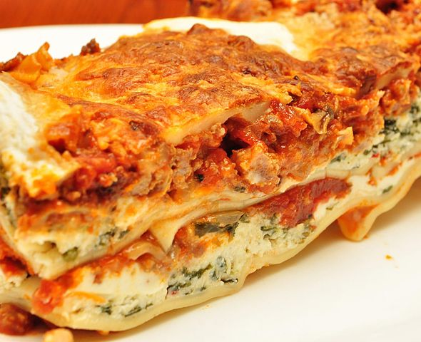

Lasagna Recipe

Description
Homemade lasagna is always a favorite at potlucks or a nice dinner at home. Although it has many ingredients, the recipe is pretty hard to mess up. Here's my recipe for a simple meat lasagna.
Ingredients
- 1 large(300g) onion, chopped fine
- 1/2 lb.(225g) ground beef
- 29 oz.(822g) diced tomatoes, drained
- 15 oz.(425g) ricotta cheese
- 12 oven-ready lasagna pasta
- 16 oz.(455g) mozzarella cheese
Steps
- Heat a large pot over medium flame. Place the finely chopped onions into the pan. Cook for about two minutes, stirring occasionally. We want the onions to soften, but not brown.
- Add the ground meat and increase heat to medium-high. Break up any large clumps of meat while stirring. I use a wooden spoon, and just jab at any large pieces. Add salt and pepper to taste(I like about 1/2 teaspoon of each). Cook until the meat loses its pink color, but does not start to brown(about three to four minutes).
- Now, add a can of diced tomatoes(drained). Stir the mixture until evenly distributed and bring to a simmer. After bubbles begin to form, lower the heat to low and cook for a few more minutes. The sauce is now done, and we can set this aside to work on the layers.
- Lay out all twelve pieces of the lasagna pasta. Then, spoon the ricotta cheese onto each pasta piece - about two tablespoons each. Distribute any excess evenly and flatten the ricotta onto each pasta piece.
- Now, it's time to assemble the lasagna. Prepare a 13x9 in. baking pan by applying a thin layer of meat sauce to the bottom, using just enough sauce to coat. Then, place three lasagna pasta(with the ricotta facing up) into the pan. Then cover the pasta with a fourth of the shredded mozzarella cheese.
- Spoon enough meat sauce to cover the mozzarella, and place another layer of lasgna pasta. Repeat with mozzarella, meat sauce, lasagna, mozzarella, and meat sauce.
- The top layer of pasta goes on the meat sauce, upside down. Cover this layer with the remaining sauce. Cover the top layer of red sauce with the remaining mozzarella cheese and then sprinkle the final 1/4 cup of parmesan on top.
- Place the lasanga onto the middle rack in a preheated 375F oven for 45 minutes. I like to place the pan in a baking sheet in case any bubble over occurs. Remove from the oven and allow the lasagna to cool for a few minutes before cutting and serving.
Home